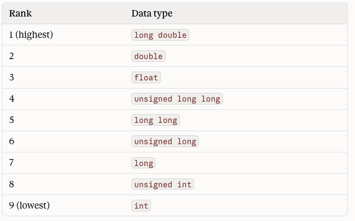
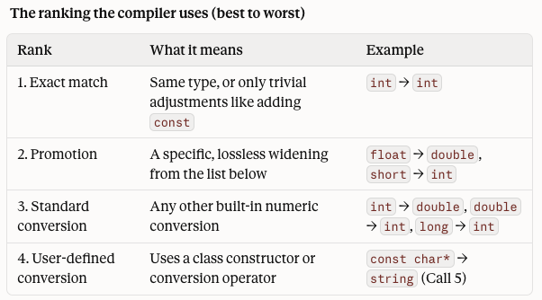

Introduction to C++
#include <iostream>
#include <string>
using namespace std;
void display(int value);
void display(double value);
void display(string value);
int main() {
display(42);
display(3.75);
display("Overloaded display");
return 0;
}
void display(int value) {
cout << "int: " << value << endl;
}
void display(double value) {
cout << "double: " << value << endl;
}
void display(string value) {
cout << "string: " << value << endl;
}display(42) calls the int version.display(3.75) calls the double version.display("Overloaded display") calls the string version.The function name stays the same because the operation is the same: display one value.
#include <iostream>
using namespace std;
double area(double side);
double area(double length, double width);
double area(double base, double height, char shapeCode);
int main() {
cout << area(4.0) << endl;
cout << area(5.0, 3.0) << endl;
cout << area(6.0, 2.5, 't') << endl;
return 0;
}
double area(double side) {
return side * side;
}
double area(double length, double width) {
return length * width;
}
double area(double base, double height, char shapeCode) {
if (shapeCode == 't') {
return base * height / 2.0;
}
return base * height / 2.0;
}area(4.0) computes a square area.area(5.0, 3.0) computes a rectangle area.area(6.0, 2.5, 't') computes a triangle area.The number of arguments helps the compiler choose the intended version.
getValue().10 is an int literal, so it matches show(int).10.5 is a double literal, so it matches show(double).#include <iostream>
#include <iomanip>
#include <string>
using namespace std;
void printReport(string label, int value);
void printReport(string label, double value);
void printReport(string label, int low, int high);
int main() {
printReport("Count", 42);
printReport("Average", 87.5);
printReport("Range", 10, 100);
return 0;
}
void printReport(string label, int value) {
cout << label << ": " << value << endl;
}
void printReport(string label, double value) {
cout << fixed << setprecision(1);
cout << label << ": " << value << endl;
}
void printReport(string label, int low, int high) {
cout << label << ": " << low << " to " << high << endl;
}What happens when there’s more than one function the compiler can choose?
A function call may require a type change before it matches an overload.

bool, char, signed char, unsigned char, short, and unsigned short aren’t in the ranking. They’re promoted to int before any comparison happens, following the promotion table from before.
Promotions are always lossless. Conversions are not always lossy: some lose data and some don’t. So “lossless” is true of every promotion, but it isn’t what makes something a promotion.
A promotion is simply one of the conversions on the fixed list from before. Everything else is a conversion, whether or not it loses data.

This matters because the computer may be faced with several different possibilities to transform the type. In that situation, promotion always outranks conversion. The computer will choose that first.
Default arguments are not part of a function’s signature. The function always has its full parameter list.
There is no promotion or conversion with a default argument: the argument must match the type specified in the signature.
| Use overloading when… | Use different names when… |
|---|---|
| the job is conceptually the same | the jobs are meaningfully different |
| parameter lists communicate the case | the shared name would hide intent |
| callers expect one operation family | callers need separate actions |
Get together in groups. Discuss which function will be activated for each call. Write down your solution.
// whoGetsCalled.cpp
// "Which One Gets Called?" Prediction Drill
//
// Instructions:
// 1. Do NOT compile yet.
// 2. For each numbered call in main(), write down which version of
// print() you think will run: int, double, char, or string.
// 3. Compile and run the program to check your predictions.
// 4. For any prediction you missed, explain WHY the compiler chose
// the version it did.
#include <iostream>
#include <string>
using namespace std;
// ----- Function prototypes -----
void print(int value);
void print(double value);
void print(char value);
void print(const string& value);
// ----- Prediction calls -----
int main()
{
short smallNum = 7;
float price = 2.5f;
string name = "Ada";
cout << "Call 1: "; print(5);
cout << "Call 2: "; print(5.0);
cout << "Call 3: "; print('A');
cout << "Call 4: "; print(name);
cout << "Call 5: "; print("hi");
cout << "Call 6: "; print(price);
cout << "Call 7: "; print(smallNum);
cout << "Call 8: "; print(true);
cout << "Call 9: "; print('A' + 1);
cout << "Call 10: "; print(7 / 2);
cout << "Call 11: "; print(7 / 2.0);
// BONUS: Predict what happens if you uncomment the line below.
// Will it compile? If not, why not?
// print(10L);
return 0;
}
// ----- Function definitions -----
void print(int value){
cout << "print(int) called with: " << value << endl;
}
void print(double value){
cout << "print(double) called with: " << value << endl;
}
void print(char value){
cout << "print(char) called with: " << value << endl;
}
void print(const string& value){
cout << "print(string) called with: " << value << endl;
}
| Style | What it communicates |
|---|---|
| pass by value | the function receives a copy |
| return value | the function sends back one result |
| pass by reference | the function may update caller data |
| pass by const reference | the function reads larger data without copying |
#include <iostream>
#include <iomanip>
using namespace std;
double addTax(double price);
int main() {
double price = 20.00;
double total = addTax(price);
cout << fixed << setprecision(2);
cout << "Price: " << price << endl;
cout << "Total: " << total << endl;
return 0;
}
double addTax(double price) {
return price * 1.0825;
}& makes the parameter an alias for the caller’s variable.#include <iostream>
#include <iomanip>
using namespace std;
void applyDiscount(double& price);
int main() {
double price = 40.00;
applyDiscount(price);
cout << fixed << setprecision(2);
cout << "Discounted price: " << price << endl;
return 0;
}
void applyDiscount(double& price) {
price = price * 0.90;
}const reference for read-only larger data.const prevents accidental changes inside the function.#include <iostream>
#include <vector>
using namespace std;
double average(const vector<int>& scores);
int main() {
vector<int> scores = {90, 84, 96};
cout << "Average: " << average(scores) << endl;
return 0;
}
double average(const vector<int>& scores) {
int total = 0;
for (int score : scores) {
total = total + score;
}
return static_cast<double>(total) / scores.size();
}| Need | Style |
|---|---|
| read a small value | pass by value |
| compute one answer | return value |
| update caller data | pass by reference |
| read large data safely | pass by const reference |
& shows whether caller storage may be involved.const marker shows read-only intent.const reference for read-only large objects such as vectors and strings.Fix the 4 errors on the following program.
// brokenOverloads.cpp
// "Fix the Broken Overloads"
//
// This program does NOT compile. It contains four overloading mistakes,
// marked BUG 1 through BUG 4.
//
// Instructions:
// 1. Compile the program and read the compiler errors carefully.
// 2. For each bug, write one or two sentences explaining WHY the
// compiler rejects it. Use the terms "signature," "ambiguous,"
// "return type," or "default argument" where they apply.
// 3. Fix each bug so the program compiles and produces the
// expected output shown at the bottom of this file.
// 4. Do not delete any function CALLS in main(). You may change
// prototypes, definitions, and arguments.
#include <iostream>
#include <string>
using namespace std;
// ----- Function prototypes -----
// BUG 1: Two versions of square()
int square(int x);
double square(int x);
// BUG 2: Two versions of larger()
int larger(int a, int b);
double larger(double a, double b);
// BUG 3: Two versions of greet()
void greet(string name);
void greet(string name, int times = 1);
// BUG 4: Two versions of show()
void show(int n);
void show(const int n);
int main()
{
// Uses of square()
cout << "square(4) = " << square(4) << endl;
cout << "square(2.5) = " << square(2.5) << endl;
// Uses of larger()
cout << "larger(3, 7) = " << larger(3, 7) << endl;
cout << "larger(3, 4.5) = " << larger(3, 4.5) << endl;
// Uses of greet()
greet("Ada");
greet("Grace", 2);
// Uses of show()
show(42);
return 0;
}
// ----- Function definitions -----
int square(int x){
return x * x;
}
double square(int x){
return x * x;
}
int larger(int a, int b){
return (a > b) ? a : b;
}
double larger(double a, double b){
return (a > b) ? a : b;
}
void greet(string name){
cout << "Hello, " << name << "!" << endl;
}
void greet(string name, int times){
for (int i = 0; i < times; i++) {
cout << "Hello, " << name << "!" << endl;
}
}
void show(int n){
cout << "show(int): " << n << endl;
}
void show(const int n){
cout << "show(const int): " << n << endl;
}
// ----- Expected output after all bugs are fixed -----
// square(4) = 16
// square(2.5) = 6.25
// larger(3, 7) = 7
// larger(3, 4.5) = 4.5
// Hello, Ada!
// Hello, Grace!
// Hello, Grace!
// show(int): 42
cout.cin.#include <iostream>
#include <iomanip>
using namespace std;
double addTax(double price);
int main() {
double price = 25.00;
double total = addTax(price);
cout << fixed << setprecision(2);
cout << "Original: " << price << endl;
cout << "Total: " << total << endl;
return 0;
}
double addTax(double price) {
return price * 1.0825;
}This program has multiple versions of the same function with different names. Replace them with the overloaded function largest().
// nameSoup.cpp
// "Refactor the Name Soup"
//
// This program WORKS, but it is hard to read and hard to use. Every
// version of "find the largest value" has its own name, so the
// programmer has to remember six different function names.
//
// Instructions:
// 1. Compile and run the program. Save the output; your refactored
// program must produce EXACTLY the same output.
// 2. Replace all six functions with overloaded functions that share
// ONE name: largest.
// 3. Update the prototypes, the definitions, and every call in main().
// 4. Do not change what any function does, only its name (and, where
// needed, its parameter list).
// 5. Answer the reflection questions at the bottom of this file.
#include <iostream>
using namespace std;
// ----- Function prototypes -----
int maxInt(int a, int b);
double maxDouble(double a, double b);
char maxChar(char a, char b);
int maxOfThreeInts(int a, int b, int c);
double maxOfThreeDoubles(double a, double b, double c);
int maxInArray(const int arr[], int size);
int main()
{
int scores[] = { 88, 92, 75, 99, 81 };
const int SIZE = 5;
cout << "Larger of 3 and 7: " << maxInt(3, 7) << endl;
cout << "Larger of 2.5 and 1.5: " << maxDouble(2.5, 1.5) << endl;
cout << "Later letter of 'q' and 'm': " << maxChar('q', 'm') << endl;
cout << "Largest of 4, 11, 6: " << maxOfThreeInts(4, 11, 6) << endl;
cout << "Largest of 1.1, 0.5, 3.3: " << maxOfThreeDoubles(1.1, 0.5, 3.3) << endl;
cout << "Highest score in the array: " << maxInArray(scores, SIZE) << endl;
return 0;
}
// ----- Function definitions -----
int maxInt(int a, int b){
return (a > b) ? a : b;
}
double maxDouble(double a, double b){
return (a > b) ? a : b;
}
char maxChar(char a, char b){
return (a > b) ? a : b;
}
int maxOfThreeInts(int a, int b, int c){
return maxInt(maxInt(a, b), c);
}
double maxOfThreeDoubles(double a, double b, double c){
return maxDouble(maxDouble(a, b), c);
}
int maxInArray(const int arr[], int size){
int biggest = arr[0];
for (int i = 1; i < size; i++) {
if (arr[i] > biggest) {
biggest = arr[i];
}
}
return biggest;
}
// ----- Reflection questions -----
// Answer these in a comment block after you finish refactoring.
//
// 1. After refactoring, the program has six functions named largest.
// How does the compiler know which one to call for each line in main()?
//
// 2. largest(int, int) and largest(const int[], int) both take two
// arguments. Why don't they conflict?
//
// 3. Inside the three-argument versions, the code now calls largest()
// with two arguments. Which version runs, and why?
//
// 4. Add this line to main(): cout << largest(3, 7.5) << endl;
// What happens? Explain the result, then fix the call two different ways.
//
// 5. Is the refactored program easier or harder to read? Give one
// advantage and one possible disadvantage of using a single name.
All three functions share the same name, but the parameter type changes.
total prototypes with different parameter counts.double value() and int value() are valid overloads.show(4.0).const reference for read-only large data.The prototype tells whether data is read, changed, or returned.
These functions have different effects even when their names look related.
cout.int& parameter.Ask which calls use promotion and which use conversion.
These overloads differ by parameter type.
The shared name communicates one operation family.
CISP 360 · Fowler